01
Entre senderos
Caminá entre el verde del bosque y descubrí la calma de la montaña.
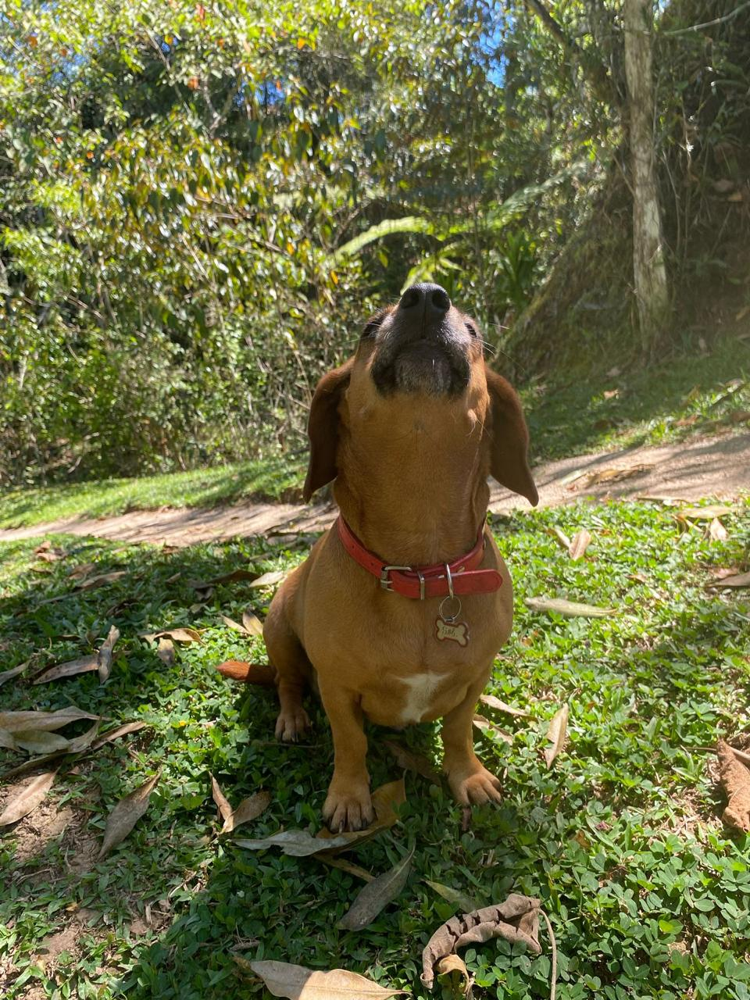
Cabañas acogedoras, café de altura y la tranquilidad de despertar entre las montañas de Tarrazú.
Elegí tus fechas y planeá una pausa.
Atención cercana · Consulta sin compromiso · Confirmación directamente con el hotel
Una buena taza de café. Una caminata sin prisa. Un paisaje que invita a quedarse. Así se vive Las Orquídeas.
Caminá entre el verde del bosque y descubrí la calma de la montaña.
Dejá la rutina atrás y disfrutá del aire fresco y el silencio.
Espacios de inspiración rústica para sentirte cerca de la naturaleza.
Disfrutá la tradición cafetalera que le da identidad a nuestra tierra.
Cinco opciones para tu visita a Tarrazú.
Todos los precios incluyen desayuno.
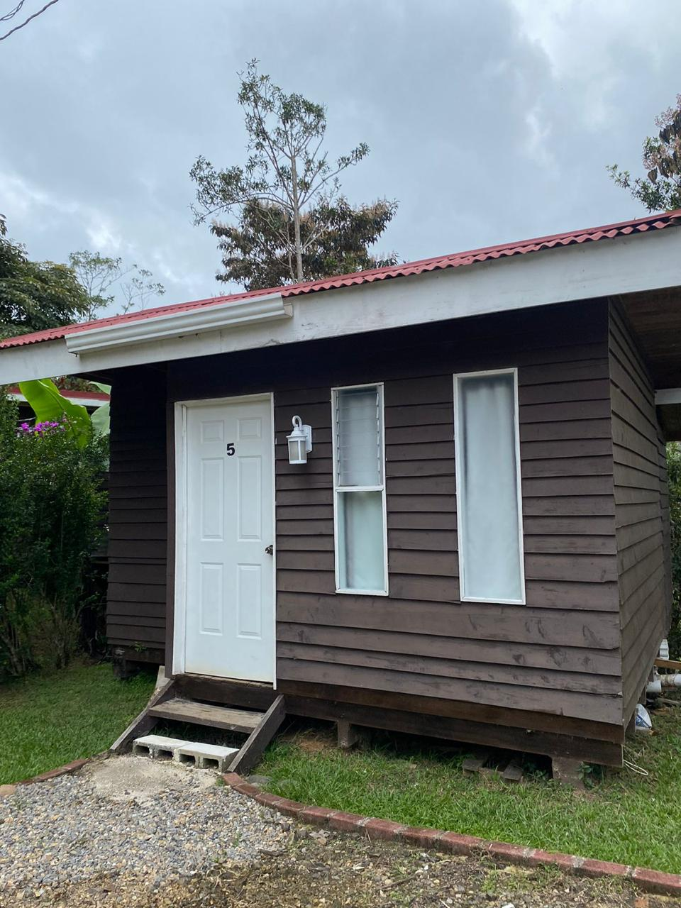
Balcón y cama matrimonial.
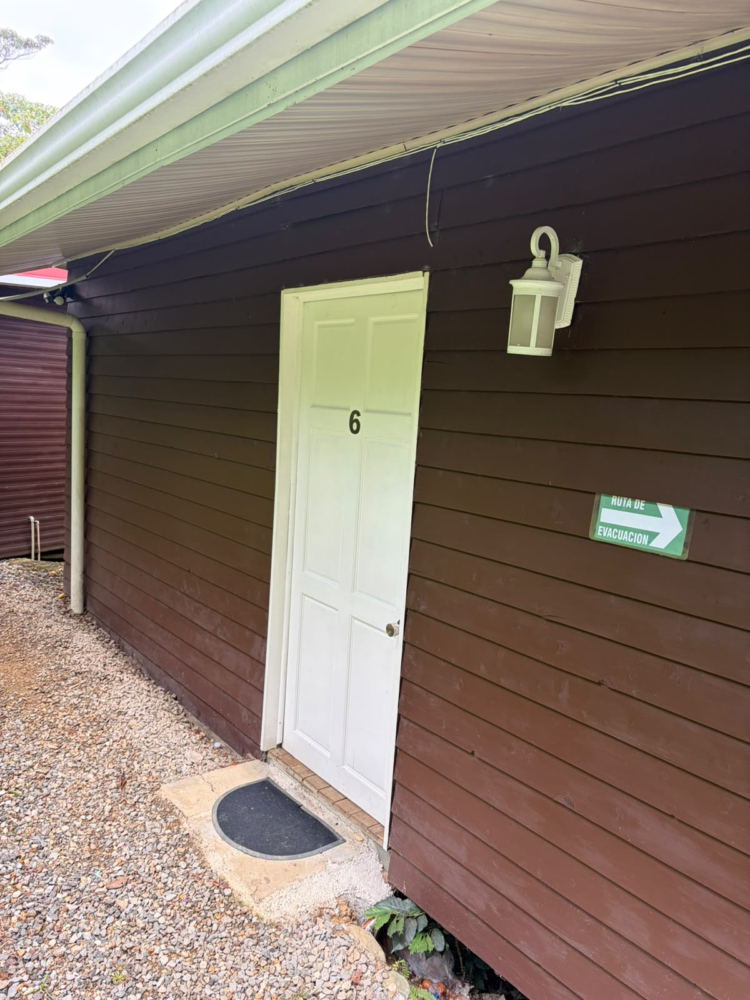
Cama matrimonial y cama individual.
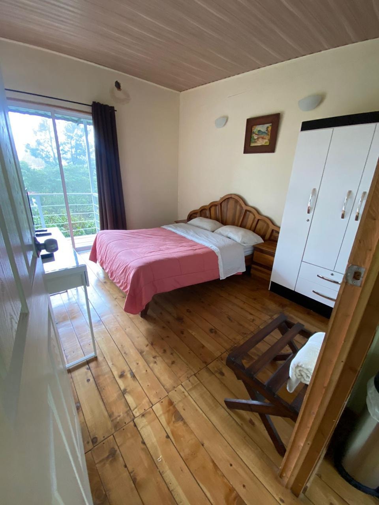
Espacio para compartir, con balcón y área de cocina.
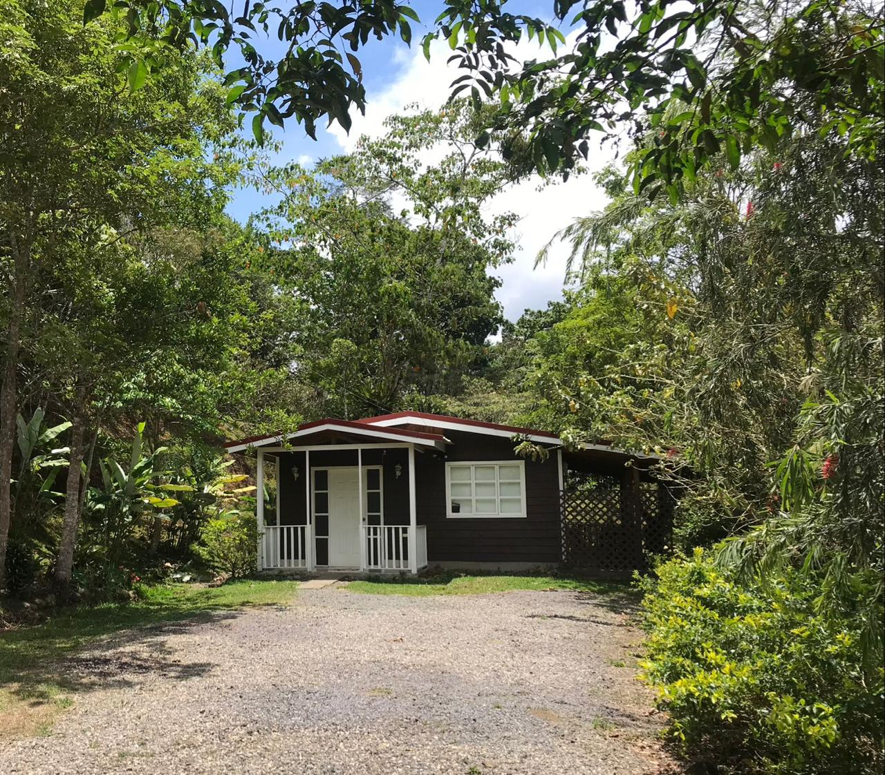
Un espacio independiente con balcón.
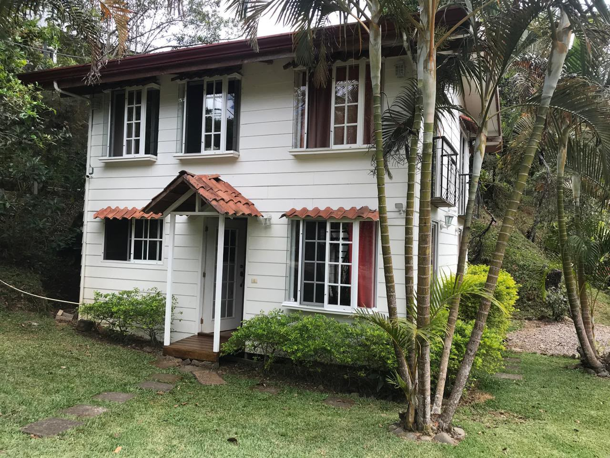
Más espacio para compartir en familia.
Tarifa individual en todos los alojamientos: ₡22.000 por noche, con desayuno incluido.
Verde por todas partes.
Y espacio para disfrutarlo.
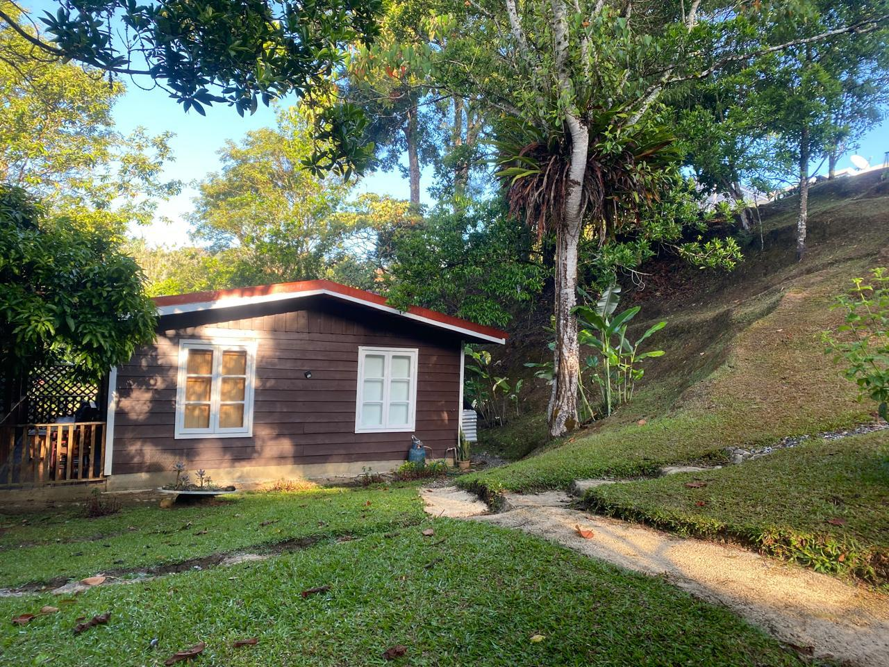
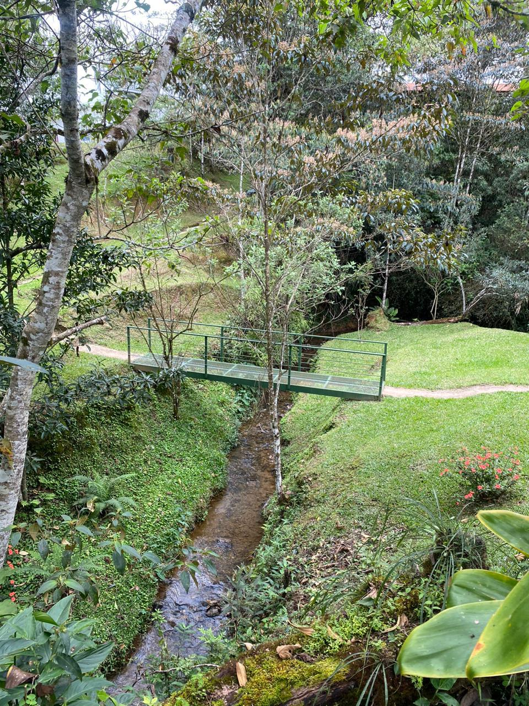
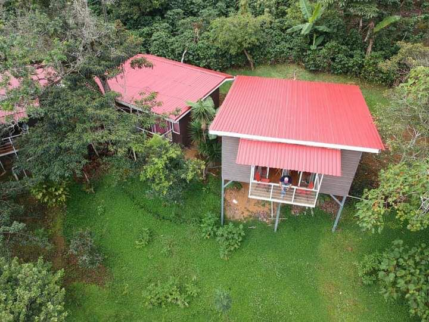
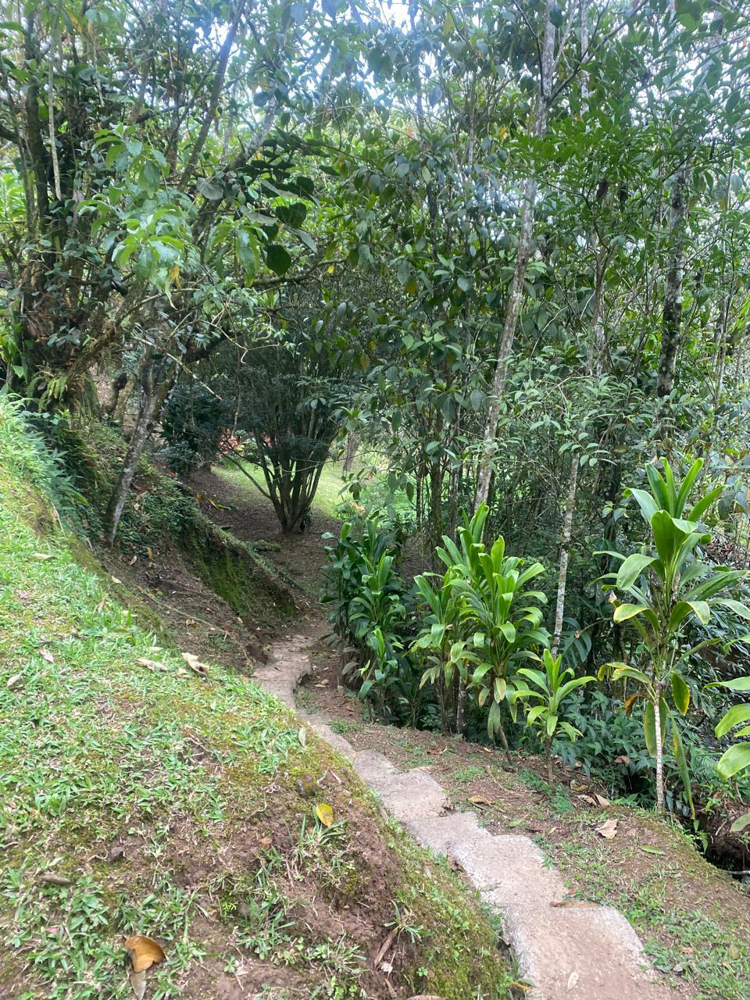
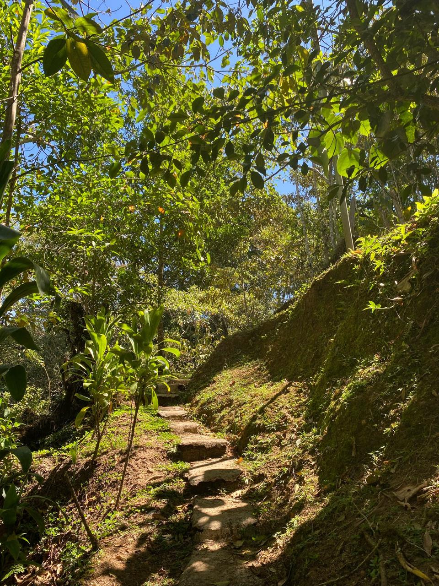
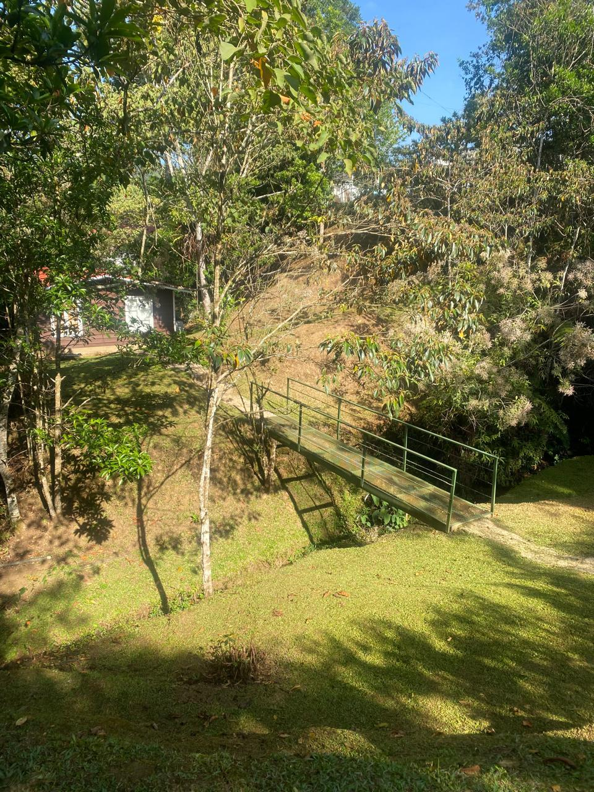
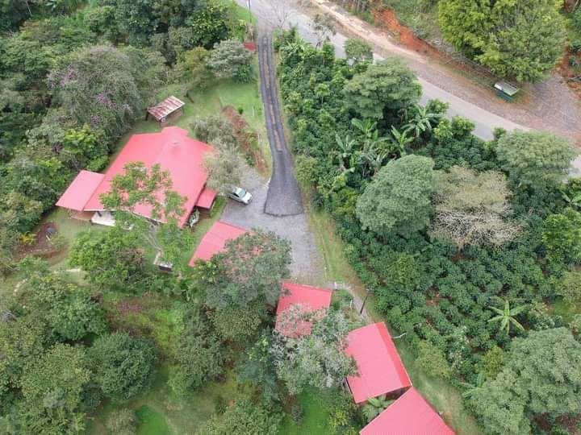
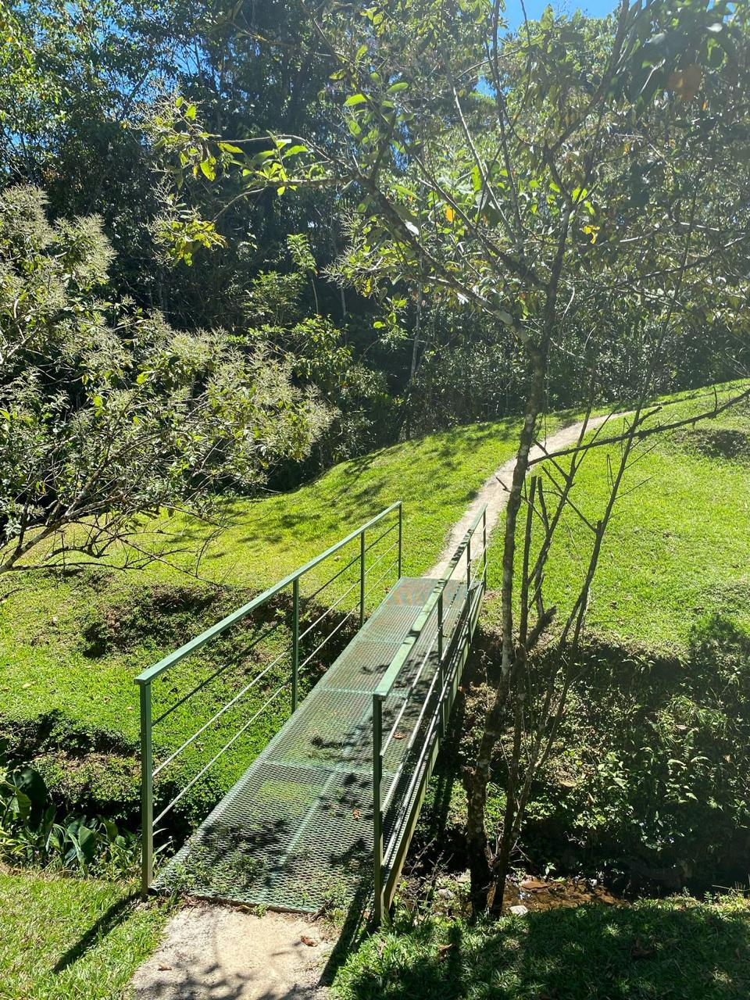
Hotel Las Orquídeas
400 m sur de la iglesia de San Lorenzo de Tarrazú.
San José, Costa Rica.
Elegí tu alojamiento y consultanos por las fechas.
Todos los precios incluyen desayuno.